Imagine trying to reverse-engineer the complex, often unexpected patterns and behaviors that emerge from simple rules. This challenge has inspired researchers and enthusiasts that work with cellular automata for decades. In cellular automata, we generally approach things from the bottom-up. We choose local rules, then investigate the resulting emergent patterns. What if we could create systems that, given some complex desired pattern, can, in a fully differentiable fashion, learn the local rules that generate it, while preserving the inherent discrete nature of cellular automata? This is what we'll explore with you today.
Zoomed view of learned circuit
"G" being generated by learned circuit
Prior work has explored learning transition rules using non-differentiable techniques, demonstrating the feasibility of evolving local rules for specific computation. Likewise prior exploration of making one-dimensional cellular automata differentiable exist. We propose a novel, fully end-to-end differentiable approach, combining two interesting concepts from the world of artificial intelligence: Neural Cellular Automata (NCA) and Differentiable Logic Gates Networks . NCA exhibit the ability to learn arbitrary patterns and behaviors, however, they do not inherently operate within a discrete state space. This makes interpretability more challenging, and leaves them stuck in a regime where current hardware must perform costly matrix multiplications to gradually update their continuous internal states. Differentiable Logic Gates Networks, meanwhile, have been used to discover combinatorial logic circuits, blending discrete states with differentiable training signals. But they haven't yet been shown to work in recurrent settings. NCA, as it were, are recurrent in both space, and time. Sounds intriguing, right?
Zooming out, we believe the integration of differentiable logic gates and neural cellular automata is a potential step towards programmable matter - Computronium - a theoretical physical substance capable of performing arbitrary computation. Toffoli and Margolus pioneered this direction with CAM-8, a cellular automata based computing architecture , in theory capable of immense, horizontally scalable computation. However, they faced a fundamental challenge: actually crafting the local rules needed to achieve a desired macroscopic computation, with Amato et al. noting that “other researchers [...] still worry about the difficulty of finding local rules that correspond to real natural systems” . What if we could directly learn these local rules, and create models that combine binary logic, the flexibility of neural networks, and the local processing of cellular automata? We believe our prototypes offer a glimpse into the future of computing: learnable, local, and discrete.
This article will walk you through implementing cellular automata using differentiable logic gates, and demonstrate some key results along the way.
We're faced with two fundamental questions.
❓
Can a Differentiable Logic CA learn at all?
To answer this, we'll start by attacking Conway's Game of Life - perhaps the most iconic cellular automata, having captivated researchers for decades. While this first experiment might seem overly simplistic (functionally equivalent to learning a truth table), it will prove the basic learning capability of our setup. The more profound question follows:
❓
Can recurrent-in-space and recurrent-in-time circuits learn complex patterns similar to those generated by traditional NCAs?
While both Differentiable Logic Gate Networks and Neural Cellular Automata (NCAs) have demonstrated trainability, effectively training circuits that exhibit both temporal and spatial recurrence of NCA, within the framework of differentiable logic, remains unexplored.
The second experiment will demonstrate the model's ability to learn recurrent circuits that generate complex patterns similar to the ones generated by traditional NCA.
Recap - Neural Cellular Automata
At the heart of this project lies Neural Cellular Automata (NCA), a synthesis of classical cellular automata with modern deep learning techniques. This powerful paradigm, pioneered by Mordvintsev et al. , represents a fundamental shift in how we think about computational systems that can grow, adapt, and self-organize.
Traditional cellular automata have long captivated researchers with their ability to generate complex behaviors from simple, local rules. Neural Cellular Automata take this concept further by making these rules learnable through gradient descent. Instead of hand-designing update rules, the system discovers them automatically, opening up entirely new possibilities for self-organizing computational systems.
What makes this approach particularly elegant is how it preserves the core principles of cellular automata - locality, parallelism, and state-based computation - while introducing the adaptability of neural networks.
In the following sections, we will summarize the main concepts from the “Growing Neural Cellular Automata” work , which presents a Neural Cellular Automata developed for morphogenesis. If you are already familiar with it, feel free to skip it.
The Structure: A 2D Grid of Intelligent Cells
At the heart of the system is a 2D grid, much like classic cellular automata. Each cell contains an n-dimensional vector of information which is called the cell's state (or channels) and for the specific case of Growing-NCA it is composed by these elements:
RGB Colors (3 channels): These represent the visible properties of the cell, essentially its color.
Alpha (α) Channel (1 channel): This indicates cell vitality. If the alpha value is greater than 0.1, the cell is considered “alive.”
Hidden Channels (n minus 4 channels): These allow cells to communicate more complex information about their environment, making interactions richer and more dynamic.
But the magic doesn’t stop here. What really sets this system apart is how the cells interact and evolve through a two-stage process.
The Two-Stage Update Mechanism: Perception and Update
The Perception Stage
In the first stage, each cell perceives its environment. Think of it as a cell sensing the world around it. To do this, it uses Sobel filters, mathematical tools designed to numerically approximate spatial gradients - "changes across its surroundings". The filters are applied channel-wise, and the result is termed the perception vector, which combines the cell’s current state with the information it gathers about its environment. A bit like how biological cells use chemical gradients to sense and react to their surroundings.
The Update Stage
Next, the neural network steps in. Each cell uses its perception vector as input to a neural network, which performs identical operations on every cell in the grid. Using around ~8,000 parameters, the neural network determines how each cell should change based on the information it has gathered. It’s here that the system evolves, with the cells adapting and responding to environmental changes.
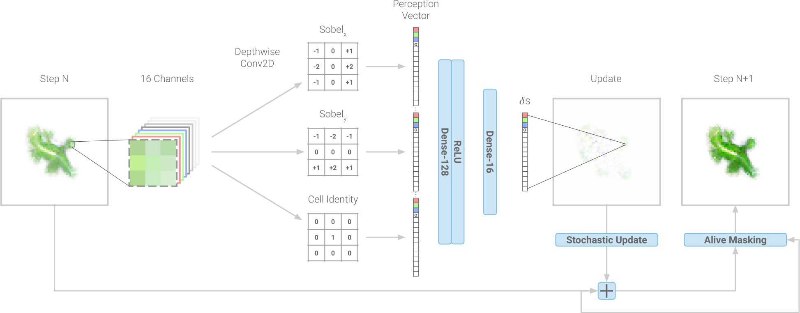Learning process for Growing NCA, image by Mordvintsev et al.
The Power of Differentiability
What makes this system truly powerful is its differentiability. Every operation, from perceiving the environment to updating its state, is fully differentiable. This means we can optimize the entire system through gradient descent, just like how neural networks learn from data. As a result, the system isn’t statically pre-defined with some arbitrary rules — it can actually learn to grow specific patterns or behaviors, making it a powerful tool for modeling complex systems.
While the individual components of the system (like Sobel filters and neural networks) are relatively simple, their combination creates something much more sophisticated. It’s a balance between simplicity and complexity, much like biological systems in nature, where local interactions lead to the emergence of surprising, intricate behaviors.
This approach doesn’t just push the boundaries of what cellular automata can do, it opens up a world of possibilities for learning, growth, and pattern formation through local interactions alone. Whether you’re a researcher, a developer, or simply someone fascinated by the intersection of AI and complexity, there’s a lot to explore here.
Other applications of Neural Cellular Automata include Image Segmentation , Image classification and many more.
Recap - Differentiable Logic Gate Networks
What if we could take the basic building blocks of computation (logic gates like AND, OR, and XOR) and combine them in a learned fashion, to solve some task ? That's exactly what Deep Differentiable Logic Gate Networks (DLGNs) achieve, merging the efficiency of digital circuits with the power of machine learning. This approach, developed by Petersen et al. , opens up exciting possibilities, especially in resource-constrained environments like edge computing and embedded systems.
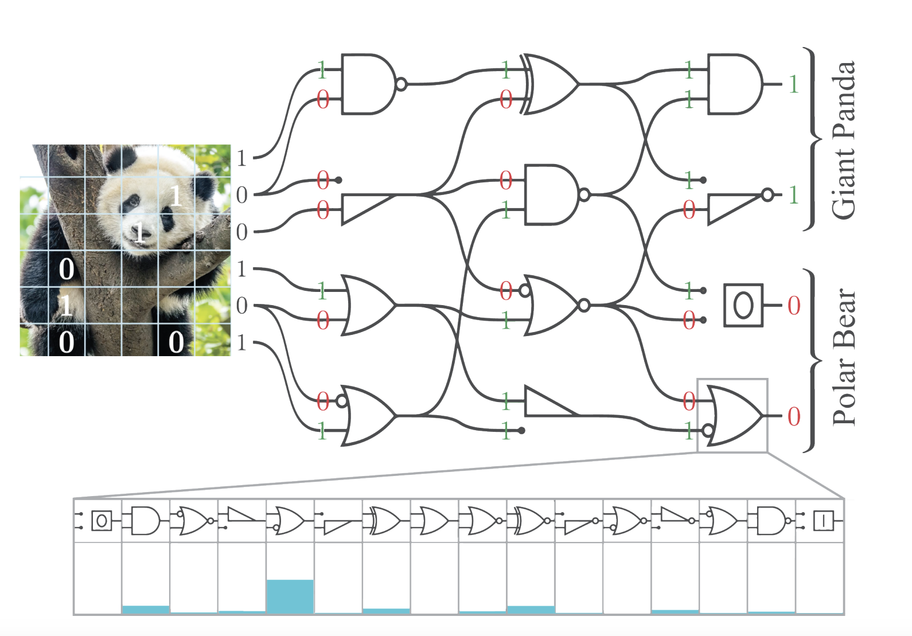Convolution Differentiable Logic Gate Network, image by Petersen et al.
How Do Deep Differentiable Logic Gate Networks Work?
Logic Gates as Neurons
At their core, DLGNs use logic gates as their building blocks, instead of the traditional artificial neurons found in neural networks. Each node in this case is a logic gate, and instead of performing weighted sums and matrix multiplications, each gate performs simple operations like AND, OR, XOR, etc.
The Architecture:
The architecture of a DLGN is surprisingly simple:
The network is composed of layers of gates. Each gate takes inputs from two gates in the previous layer, resulting in a naturally sparse network.
The connections between gates are fixed; they are randomly initialized but do not change during training. The learning process determines what each gate does, not the connections between gates.
During inference, each gate performs one simple binary operation (think AND or OR) based on the operation it learned.
The Learning Process: Making Discrete Operations Differentiable
Instead of learning weights as traditional neural networks do, this network learns which logic operation each gate should perform. During training, each node solves a classification task to identify the correct gate to use in order to minimize the objective function.
The challenge is that logic gates are inherently discrete and non-differentiable, making them unsuitable for gradient-based learning. So how do we make them learn? Through two key tricks:
Continuous Logic Operations
During training, each logic operation is replaced by a continuous relaxation, which is a differentiable version that operates on continuous values between 0 and 1. For example, instead of a hard AND gate that only accepts 0 or 1, we use a soft AND gate that can handle values between 0 and 1 as inputs, and passes a continuous mix of the two inputs as its output. These continuous relaxations (listed below) allow us to train the network using gradient descent.
Probabilistic Gate Selection
Each gate maintains a probability distribution over the 16 possible binary operations for two inputs. This distribution is represented by a 16-dimensional parameter vector, which is then transformed into a probability distribution using softmax. The values of the 16-dimensional vector are modified during the training process: over time, the gate learns to prefer one operation over others.
Index
Operation
Continuous Relaxation
Symbol
0
FALSE
0
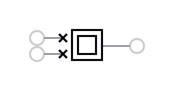
1
AND
a * b
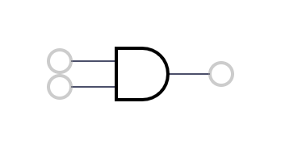
2
A AND (NOT B)
a - a*b
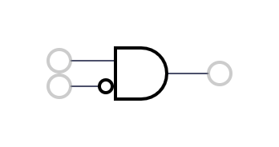
3
A
a
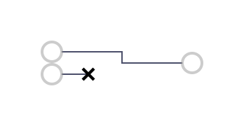
4
(NOT A) AND B
b - a*b
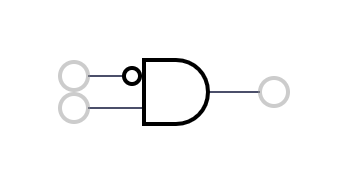
5
B
b
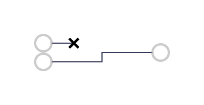
6
XOR
a + b - 2a*b
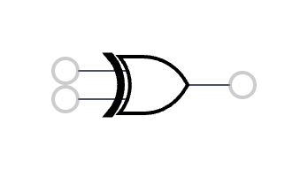
7
OR
a + b - a*b
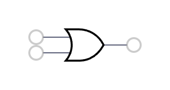
8
NOR
1 - (a + b - a*b)
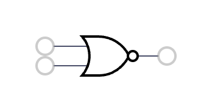
9
XNOR
1 - (a + b - 2a*b)
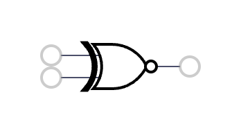
10
NOT B
1 - b
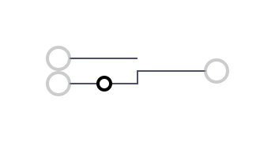
11
A OR (NOT B)
1 - b + a*b
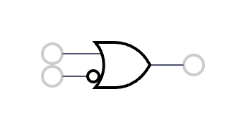
12
NOT A
1 - a
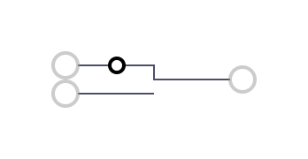
13
(NOT A) OR B
1 - a + a*b
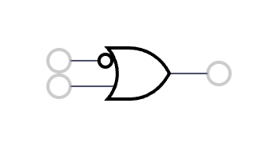
14
NAND
1 - a*b
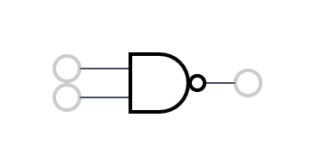
15
TRUE
1
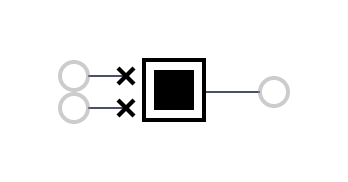
During training, the network uses the continuous relaxations of the logic operations, but once the network is trained, we switch to pure binary operations for lightning-fast inference.
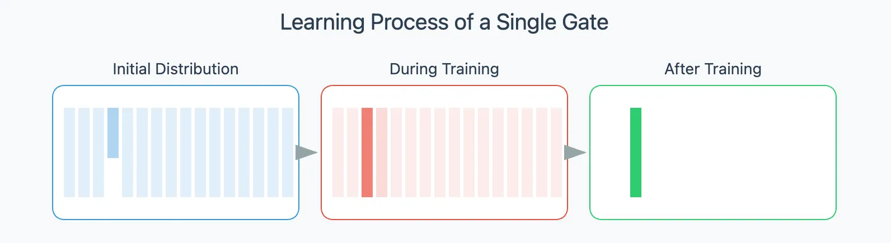Sketch illustrating the training of a single Gate
To facilitate training stability, the initial distribution of gates is biased toward the pass-through gate.
Training: Learning the Gates
The training process follows a standard forward-backward pass:
Forward Pass
The input values propagate through the network.
Each gate, given two inputs, computes the results of all 16 possible logic operations using their continuous relaxations.
These results are weighted according to the gate’s probability distribution, and the weighted sum becomes the output of the gate.
Backward Pass
The network computes the gradients with respect to the probability distributions, which are then updated using gradient descent.
Over time, each gate’s distribution becomes more squeezed and spontaneously converge on one operation, whether it’s AND, OR, XOR, or another.
Inference: The Magic of Binary Operations
Once training is complete, we can freeze the network. This means that each gate settles on its most probable operation, and the continuous versions of the logic operations are discarded. What’s left is a pure logic circuit that operates on binary values (0 or 1).
This final form is incredibly efficient. When it’s time to deploy, the network runs using only binary operations, making it exceptionally fast on any hardware.
Differentiable Logic Cellular Automata
The integration of differentiable logic gate networks with neural cellular automata provides a solution for handling discrete states while maintaining differentiability.
Let's explore this system in depth, examining how it differs from traditional Neural Cellular Automata, while highlighting their common principles and understanding the fundamental role of differentiable logic gates. We'll borrow the terminology of NCA stages, highlighting where our model differs.
The Structure: A 2D Grid of binary, intelligent cells
As with NCA, the system is built around a 2D grid of cells, where each cell's state is represented by an n-dimensional binary vector This binary state vector acts as the cell's working memory, storing information from previous iterations. Throughout this article, cell state and channels will be used interchangeably.
The Two-Stage Update Mechanism: Perception and Update
The Perception Stage
In cellular automata systems, each cell must be aware of its environment. While traditional NCA use Sobel filters to model this perception, DiffLogic CA takes a different approach, following . Each kernel is a distinct circuit, where connections are fixed with a particular structure, but the gates are learned. The kernels are computed channel-wise. Each circuit employs four layers whose connections are designed to compute interactions between the central cell and its neighboring cells as in the figure on the right. The output dimension is the number of kernels multiplied by the number of channels. Alternative approaches involve kernels with multiple bits of output per channel, rather than only one, improving convergence in some cases.
Each kernel operates channel-wise and computes the interaction between the central cell and its neighbors, emulating the CA's interaction within the Moore neighborhood. This 3x3 patch shows a state dimension of 3. The circuit is wired to process interactions between the central cell and its surrounding cells. The first layer has 8 gates, with each gate taking the central cell as its first input and a neighboring cell as its second input.
The Update Stage
The update mechanism follows the NCA paradigm, but employs a Differentiable Logic Network to compute each cell's new state. The network's connections can be either randomly initialized or specifically structured to ensure all inputs are included in the computation. The updated state is determined by applying a Differentiable Logic Gate Network to the concatenation of the cell's previous memory (represented in gray), and the information received from its neighbors (represented in orange). In standard NCA, at this point, one would incrementally update the state, treating the whole system like an ODE. With DiffLogic CAs, we output the new state directly.
A representation of the update step given a cell state of dimension 4 and 2 kernels.
In summary: the perception phase uses a logic gate network to process the binary neighborhood states, replacing traditional convolution filter-based operations, and the update rule is implemented as another logic gate network that takes the perception output and current state as inputs, and outputs the next binary state of the cell.
Schematic representation of a 4x4 DiffLogic CA grid. At each time step, each cell reads and processes the information stored in its neighboring cells' states and then updates its own state
The diagram above schematically represents a 4x4 DiffLogic CA grid, each of the small squares is a tiny computer with a dual-memory system. We visualize these two registers as gray and orange, respectively. Every cell in our grid performs a two-step process, which we will later see can be either performed synchronously, or in some cases asynchronously:
Step 1: The Perception Phase First, every cell in our grid becomes a data gatherer. They examine their neighbors' gray registers, process what they observe, and store their results in their orange registers.
Step 2: The Update Phase Right after that, each cell becomes a decision maker. Using the information stored in both its registers (the original gray one and the newly filled orange one), the cell calculates its new state. This new state gets written to the gray register, while the orange register is cleared, ready for the next round of perception.
The system behaves like a network of tiny, independent computers that communicate with their neighbors and make decisions based on their observations. Each cell is a miniature processor in a vast, interconnected grid, working together to perform complex computations through these simple local interactions. By combining local connections with distributed processing, we've built something that can tackle tasks exploiting the emergence of collective behavior.
We again find strong kinship with the the work Programmable Matter and Computronium by Toffoli and Margolus, who proposed the CAM-8 , a computer architecture based on cellular automata which is similar to the system above where each cell uses a DRAM chips for state variables and an SRAM for processing.
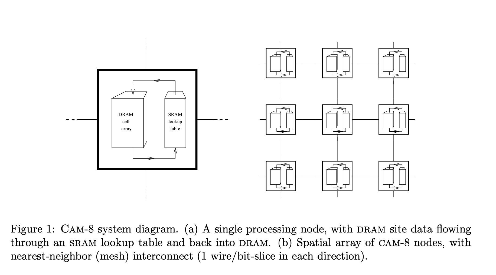Cam-8 architecture and image from from Margolus et al.
Experiment 1: Learning Game of Life
Conway's Game of Life is a fascinating mathematical simulation that demonstrates how complex patterns can emerge from simple rules. Created by mathematician John Conway in 1970, this game isn't played in the traditional sense - it's a cellular automaton where cells on a grid live or die based on just four basic rules. Despite its simplicity, the Game of Life can produce amazing behaviors, from stable structures to dynamic patterns that seem to take on a life of their own.
The rules of the game are elegantly simple, focusing on how each cell interacts with its eight neighboring cells:
Birth: A dead cell (whose current value is 0) with exactly three living neighbors springs to life in the next generation, as if by reproduction.
Survival: A living cell (whose current value is 1) with either two or three living neighbors survives to the next generation, representing a balanced environment.
Underpopulation: A living cell with fewer than two living neighbors dies from isolation in the next generation.
Overpopulation: A living cell with more than three living neighbors dies from overcrowding in the next generation.
These four rules, applied simultaneously to every cell in the grid at each step, create a dance of patterns. From these basic interactions emerge complex behaviors: stable structures that never change, oscillators that pulse in regular patterns, and even gliders that appear to move across the grid. It's this emergence of complexity from simplicity that has made the Game of Life a powerful metaphor for self-organization in natural systems, from biological evolution to the formation of galaxies.
Given its binary and dynamic nature, Game of Life is a good sanity check of the DiffLogic CA.
State and Parameters
Given that we know the rules are independent of previous state iterations, we consider a cell state consisting of 1 bit, meaning the system is essentially memory-less. The model architecture includes 16 perception circuit-kernels, each of them with the same structure of nodes [8, 4, 2, 1]. The update network instead has 23 layers: first 16 layers have 128 nodes each, and the subsequent layers have [64, 32, 16, 8, 4, 2, 1] nodes, respectively.
Loss function
The loss function is computed by summing the squared differences between the predicted grid and the ground truth grid.
i,j∑N(yi,j−y~i,j)2
Training Dataset
The model was trained on 3x3 periodic grids for a single time step. Given that each cell in the Game of Life interacts with its eight neighbors, and its next state is determined by its current state and the states of its neighbors, there are 512 possible unique configurations for a 3x3 grid. To train the model, we constructed a grid including all 512 possible grid configurations. Learning the next state of grid correctly implies learning the complete Game of Life rule set. The trained parameters were subsequently used to simulate the model's behavior on larger grids.
Results
On the left, you can observe the loss plot comparing the two representations of logic gates. The soft loss computes the output of the gates using their continuous approximation as explained in the previous section, while the hard loss selects only the most probable gate and uses its discrete output. Both losses fully converge, indicating that we were able to generate a circuit that perfectly simulates the Game of Life.
Using hard inference (selecting most probable gates), the simulation on the right displays the learned circuit's performance on a larger grid. The emergent patterns capture the structures from Conway's Game of Life: gliders moving across the grid, stable blocks remaining fixed in place, and classic structures like loaves and boats maintaining their distinctive shapes. The successful replication of Game of Life's characteristic patterns demonstrates that our circuit has effectively learned the underlying local rules.
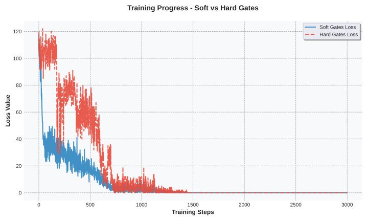Training plot for DiffLogic CA learning Game of Life
While circuit optimization is not the primary focus of this project, this section provides a brief analysis of the generated circuit.
The total number of active gates used (excluding the pass-through gates A and B), is 336. Examining the gate distributions, we observe that the most frequently used gates in both networks are OR and AND.
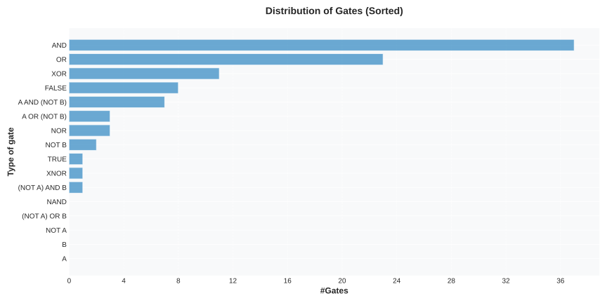Distribution of gate counts across all perception kernel circuits
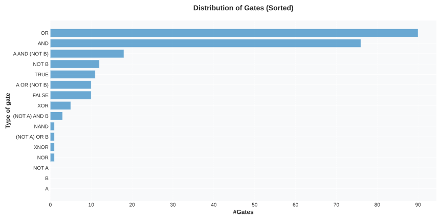Distribution of gate counts across the update circuit.
Since our final circuit is simply a series of binary gates, we can step even deeper and visualize the entirety of the circuit logic involved! Below is a visualization of most of these 336 gates (some gates are pruned, when we determine they don’t contribute to the output).
Complete learned perceive-update circuit implementing Game of Life (available interactively)
The squares arranged in a three-by-three grid on the left are the input gates, arranged as they would be when viewed from the perspective of a single, central, cell somewhere in the game of life. The wires are colored green when high (1), and red when low (0). Finally, each gate should be somewhat self-explanatory, being one of AND, OR or XOR gates, with small circles on inputs or on outputs to denote NOTs on those particular connections. We've additionally replaced the binary NotB and NotA gates with a unary Not gate, and pruned the unused input, to simplify visualization. Finally, some gates are simply “True” or “False”, and these look almost identical to the inputs, appearing as nested squares, either filled in (True) or empty (False).
On the far right, we see the single output channel of this circuit - denoting the new state of the cell in the Game of Life. In this particular configuration in the figure, we see the circuit correctly computing the rule “Any dead cell with exactly three live neighbours becomes a live cell, as if by reproduction.”
Neural Cellular Automata (NCA) have shown remarkable capabilities in pattern generation tasks , inspiring us to explore similar capabilities with diffLogic CA. In this task, the system evolves from a random initial state toward a target image, allowing multiple steps of computation. By evaluating the loss function only at the final time-step, we challenge the model to discover the discrete transition rules that guide the system through a coherent sequence of states without step-by-step supervision.
Successfully learning to reconstruct images would validate two key aspects: the model's ability to develop meaningful long-term dynamics through learned rules, and its capability to effectively learn stateful, recurrent-in-time, recurrent-in-space circuits. This investigation is particularly significant as it represents, according to the best of our knowledge, the first exploration of differentiable logic gate networks in a recurrent setting.
State and Parameters
We consider a cell state (channels) of 8 bits and iterate the DiffLogic CA for 20 steps. The model architecture includes 16 perception circuit-kernels, each with 8, 4, then 2 gates per layer, respectively. The update network has 16 layers: 10 layers with 256 gates each, and then layers with [128, 64, 32, 16, 8, 8] gates, respectively.
Loss function
We define the loss function as the sum of the squared differences between the first channel in the predicted grid and the target grid at the last time step.
i,j∑N(yi,j,0−y~i,j,0)2
Training Dataset
The model was trained to reconstruct a 16x16 checkerboard pattern within 20 time steps. For each training step, the initial state was randomly sampled. The target checkerboard pattern is shown on the right.
The DiffLogic CA fully converges to the target pattern. The training plot (left) reveals consistent convergence of both soft and hard loss functions. The evolution of the first channel (right), which is used for computing the loss function, shows clear pattern formation. An intriguing emergent property is the directional propagation of patterns from bottom-left to top-right, despite the model having no built-in directional bias.
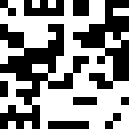Evolution of the diffLogic CA, only considering the first bit in the cell state.
Analysis of the Generated Circuit
The total number of active gates used (excluding pass-through gates A and B) is 22. Analysis of the learned logic gates reveals a different distribution of gates between the perception kernels and update networks. The TRUE gate appears to play a key role in perception but not in the update one.
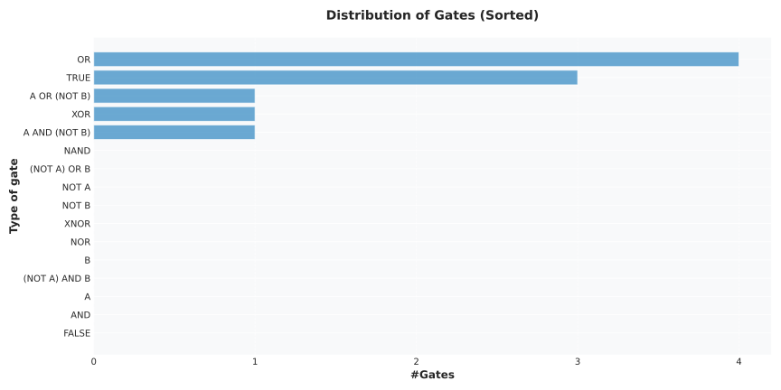Distribution of gate counts across all perception kernel circuits
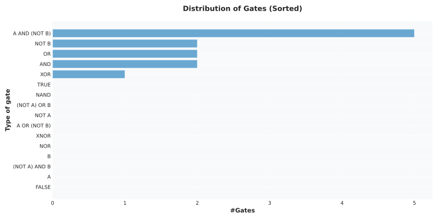Distribution of gate counts across the update circuit.
Below, we provide an interactive visualization of the circuit, after pruning. Remarkably, we are left with just six gates - one of which is redundant - an AND between the same input. In other words; the entirety of the procedural checkerboard-generation function learned by the circuit can be implemented using just five logic gates. Likewise, most of the inputs and outputs remain unused. Even more remarkably, the cell's own current visual output isn't even considered in an update step. We encourage readers to interact with the circuit below , clicking on and off inputs on the left to observe the effect on the outputs.
To the naked eye, our solution appears to build the grid iteratively—brick by brick, as it were. However, during training, we only employed one fixed size of the grid. Naturally, we should investigate what happens if we change the grid size: is the rule we learned truly an iterative, procedural solution, or is it overfit to one particular grid size? Let's scale up both the spatial and temporal dimensions by a factor of four—using a grid four times larger and running it for four times as many steps.
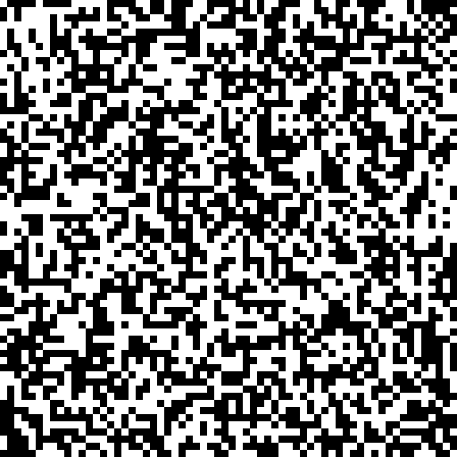Generalization Test: Learned Rules Applied to 4x Larger Grid
Success! The circuit works just as well in this new setting. This raises an interesting question as to the inductive biases of this model. In the NCA setting, it was possible to coax behavior invariant to grid size and time, but this required either special spatially invariant loss functions , and in the case of the growing lizard a special "alive/dead" regime to prevent overfitting to boundary conditions. Here, our boundary conditions are also fixed, yet the model has learned a "boundary-size-invariant" way to produce the pattern. Could the discretization and minimal circuit size be finding some minimal procedural description for generating patterns of interest?
Given our setting, we tested the system's resilience to damage and its recovery capabilities through two experiments. In the first test (left), we evaluated pattern reconstruction when a large portion of cells were permanently disabled, simulating faulty components. In the second test (right), the disabled cells were reactivated after a set number of steps. The system demonstrated robust behavior in both scenarios: maintaining pattern integrity despite permanent cell damage in the first case, and successfully self-repairing to produce the correct pattern once damaged cells came back online in the second case.
Robust computing represents a fundamental shift in system design, prioritizing reliable operation under real-world conditions. In contrast to traditional computing, which relies on precise, error-free components, robust systems are designed to remain functional even in the face of hardware failures, environmental interference, unexpected inputs, or manufacturing variations. While contemporary computing, especially distributed computing, has some affordances around robustness to certain types of failures, it's generally still far more brittle than any similarly complex system in the natural world, and those affordances are usually designed around very specific failure cases that we are unable to control for by other means (think cosmic ray-induced bit flips in RAM). In the example reported above, we observed how the DiffLogic CA learned rules that exhibit both fault tolerance and self-healing behavior, without explicitly designing around these conditions. When some cells fail, the damage is contained, and the system continues to function with a gradual decline rather than experiencing catastrophic failure. This mirrors how biological systems achieve reliability through networks of imperfect components, suggesting a powerful approach for future computing systems that can maintain functionality even under imperfect conditions.
Asynchronicity
Inspired by the approach used in traditional NCA training , we explored asynchronous updates. Instead of updating all cells simultaneously (which can be likened to a global clock), we randomly select a subset of cells to update in each step. This simulates a scenario where each cell operates with its own internal clock. Within this framework, each cell can be conceptualized as a tiny computational unit operating independently of other cells, making its own decisions.
We proceeded directly to introducing asynchronicity to training, expecting this to be markedly more difficult than in traditional NCAs. Firstly, the updates at every step must output the full new state, and not just an incremental update. Secondly, a cell must now be able to account for surrounding cells being in any combination of desynchronization. Any given neighbour could be one, two, three, or more steps "behind" or "ahead". This combinatorially increases the possible transitions rules the cell has to effectively learn to deal with. To our surprise - successful asynchronous training was relatively easy to achieve in the simplest pattern - the checkerboard. Below, we demonstrate three different, unique, reconstructions of the pattern , all starting from the same initial state but with distinct random seeds to determine the cell update order. Despite the asynchronous nature of these updates and a more complex resulting update rule, the cells correctly reconstruct the target pattern in 50 steps, compared to the original 20.
Furthermore, the learned circuit demonstrated generalization capabilities, exhibiting successful reconstruction on larger grids and resilience to errors - a self-healing checkerboard..
The biggest surprise came when sanity checking the original synchronously trained rule, but using asynchronous inference. It works! This is surprising and further speaks to the robustness of the circuit originally discovered.
This unexpected success with asynchronous inference led us to hypothesize that models trained directly with asynchronous updates would exhibit even greater robustness. To test this, we randomly deactivate a 10x10 pixel square within the image domain at each inference time-step, as shown in the simulations below.
The images hint at the difference in resilience to noise - the asynchronous cells recover from the damage slightly more quickly, while the synchronously trained rule appears to be more impacted. By measuring the error as the sum of the absolute difference between the target and reconstructed images, we found that asynchronous training improves robustness considering these perturbations.
For the next experiment, we tested DiffLogic CA's ability to learn arbitrary shapes by training it on the outline of a lizard, in an homage to the original NCA work. This involves more memorization than reproducing a highly-compressible regular pattern like the checkerboard. We use a cell state of 128 bits and iterate the DiffLogic CA for 12 steps. The model architecture includes four perception circuit-kernels with 8, 4, 2, and 1 gates at each layer, respectively. The update network has 10 layers: eight layers with 512 gates each, and then layers with [256, 128] nodes, respectively.
Training Dataset
We trained the model to generate a 20x20 lizard pattern, in 12 time steps. Just as in NCA, the initial condition consists of a central seed to break symmetry, with periodic boundary conditions applied to the grid edges. We employed the same loss function previously used in the checkerboard experiment.
To assess the model's generalization capabilities, we evaluated its performance on a larger 40x40 grid. The results demonstrate that the model successfully learned the growth pattern without exploiting boundary conditions.
On the left, the plot shows the convergence of both the soft and hard losses to zero. On the right, the visualization illustrates the successful growth of the lizard within the larger grid.
Training DiffLogic CA to generate complex patterns presents significant optimization challenges. The process required extensive hyper-parameter tuning. Future improvements to both the model architecture and circuit topology could enhance convergence speed and stability, potentially reducing the need for such intensive hyper-parameter optimization.
Analysis of the Generated Circuit
A total of 577 active gates were used, excluding pass-through gates A and B.
The perception kernels predominantly employed the TRUE gate, while the update circuit employed almost all available gates.
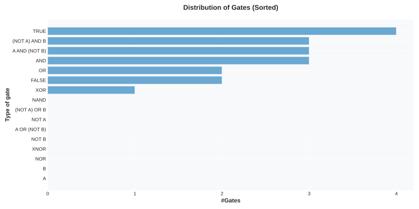Distribution of gate counts across all perception kernel circuits
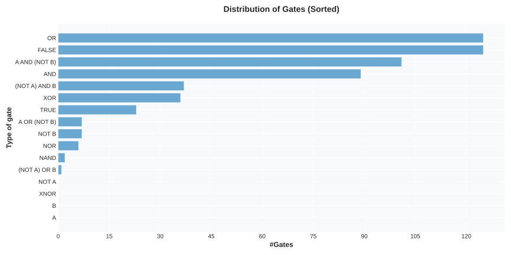Distribution of gate counts across the update circuit.
Experiment 4: Learning the G with colors
Previous experiments have primarily focused on effectively monochrome images, using the last channel for visualization purposes. Wanting to investigate more complex target states, we trained the model to generate a 16x16 "colored" image, over 15 steps. Using 64 channels per cell state, the model has four perception circuit-kernels, each with four three layers with 8, 4, and 2 gates, respectively. The update network architecture consists of 11 layers: 8 layers of 512 nodes each, and a final sequence of 3 layers with [256, 128, 64] nodes, respectively.
Training Dataset
The model was trained to generate a 16x16 colored letter of the alphabet (that might be reminiscent to some), over 15 steps. The initial state is fully zero, without periodic boundary conditions. Following the convention used in standard NCA , the first three channels represent RGB color values. However, in our case, these values are constrained to a binary representation of 0s and 1s, resulting in a palette of eight possible colors.
Target Pattern
Loss function
The loss function is defined as the sum of the squared differences between the predicted grid and the target grid at the final time-step, considering only the first three channels (0, 1, 2).
i,j∑N(yi,j,0:3−y~i,j,0:3)2
Results
The results demonstrate that the model successfully learns this colorful G. On the left, the loss function plots show the convergence of both the soft and hard losses. On the right, the reconstruction the colorful G in 15 steps is shown.
A total of 927 active gates were used (excluding pass-through gates A and B). Analysis of the learned logic gates revealed distinct distributions across perception and update networks. Notably, TRUE and FALSE gates were extensively employed in both networks, while the OR gate was the most prevalent in the update network. We note that this circuit was more complex than previous experiments, both in the difficulty of finding suitable hyperparameters and in size of the circuit.
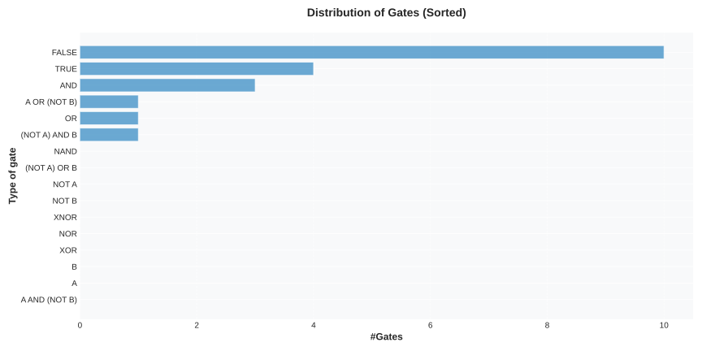Distribution of gate counts across all perception kernel circuits
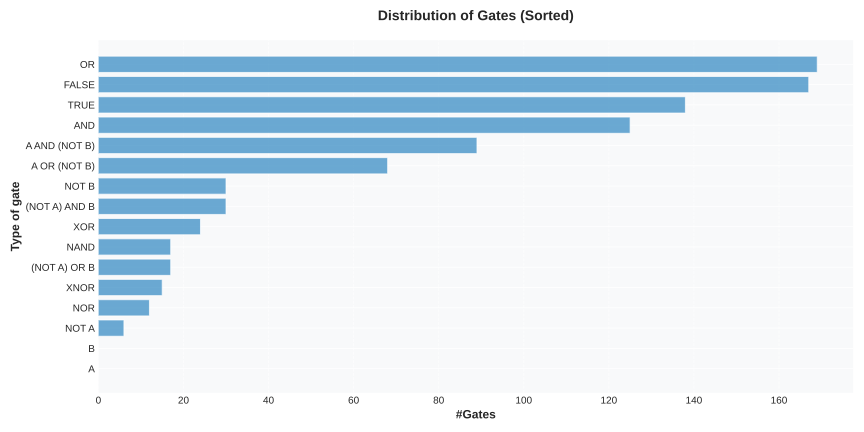Distribution of gate counts across the update circuit.
Summary and Discussion
This work introduces DiffLogic CA, a novel NCA architecture and training regime, utilising a fully discrete cell state, updated using a learned, recurrent binary circuit. We replace the neural network components with Deep Differentiable Logic Networks, which bring the flexibility of differentiable training to discrete logic gates. The successful application of differentiable logic gates to cellular automata is demonstrated through two key results: replicating the rules of Conway's Game of Life and generating patterns via learned discrete dynamics. These findings highlights the significant potential of integrating discrete logic within the framework of neural cellular automata and prove that differentiable logic gate networks can be effectively learned in recurrent architectures. While the current model exhibits promising results in learning patterns, training it to generate more complex shapes and structures presents ongoing challenges. Potential directions for improvement include the exploration of hierarchical NCA architectures and the incorporation of specialized gates designed to facilitate state forgetting. For instance, integrating LSTM-like gating mechanisms into the state update process could enable a richer and diverse combination of past and newly computed candidate states, potentially enhancing the model's dynamics and expressiveness.
Acknowledgments
We thank Blaise Aguera y Arcas for his support and the Paradigm of Intelligence Team for the fruitful and inspiring discussions. Many thanks to Marek Materzok, and the contributors to the excellent DigitalJS circuit visualization library, which was used to power all the interactive circuits in this article.
Citation
For attribution in academic contexts, please cite this work as
Miotti, et al., "Differentiable Logic CA: from Game of Life to Pattern Generation", Paradigms of Intelligence, 2025.
BibTeX citation
@MISC{Pietro-Miotti-Eyvind-Niklasson-Ettore-Randazzo-Alexander-Mordvintsev2025-jb,
title = "Differentiable Logic {CA}: from Game of Life to Pattern
Generation",
author = "{Pietro Miotti, Eyvind Niklasson, Ettore Randazzo, Alexander
Mordvintsev}",
booktitle = "Paradigms of Intelligence",
month = mar,
year = 2025,
howpublished = "\url{https://google-research.github.io/self-organising-systems/difflogic-ca}",
}
{kind=link}
{kind=link}
{kind=link}
{kind=link}
{kind=link}
.svg)
.svg)

{kind=link}
{kind=link}
{kind=link}
{kind=link}
{kind=link}
{kind=link}

{kind=link}
{kind=link}
{kind=link}
{kind=link}
{kind=link}
{kind=link}
{kind=link}
{kind=link}
{kind=link}
{kind=link}
{kind=link}
{kind=link}
{kind=link}
{kind=link}
{kind=link}
{kind=link}

.svg){kind=link}
.svg){kind=link}